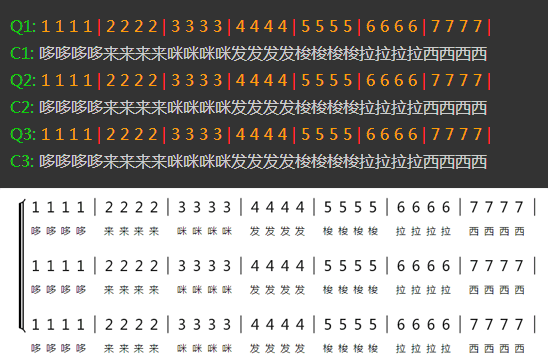
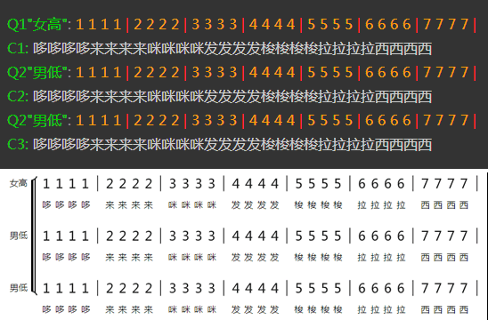
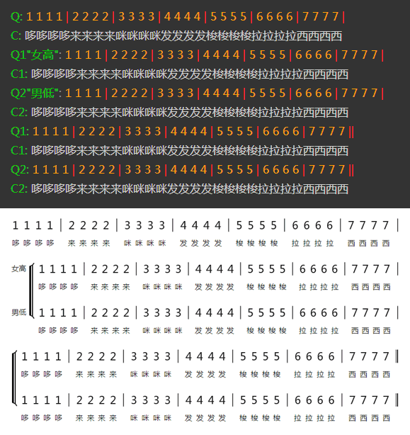

在编写单声部简谱的时候，词曲的行开头是使用“Q”和“C”进行定义的。而当编写多声部时，只需要在每个声部的“Q”和“C”后面加上一个声部编号即可。如下图所示：

在多声部时，您还可以在声部编号数字的后面用双引号表示声部的名称，如下图：

多声部和单声部可以混合使用的，下面是一个示例：

自定义声部括弧的位置
有些时候，多声部可能是在一行的中间开始的，此时可以在脚本中使用“&sbf”来定义声部括弧的位置。
同时，除第一个声部外的其他声部，在声部符前是没有内容的，可以使用“8”（隐藏空白音符）和“|*”（隐藏小节线）进行填充。
示例如下：